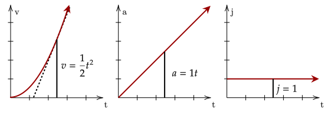

In the previous few tutorials, we noted how to deal with motion where we set the acceleration as constant. In circular motion, we noted an acceleration which changes direction but not magnitude. Now, we'll have a flyby of motion under non-constant acceleration.
If acceleration is the rate of change of velocity, then we also have a term for the rate of change of acceleration, which is sometimes used in engineering.
From the above definition, we see that the jerk is the derivative of the acceleration. We can write this out like the following.
We can also write the above in terms of velocity and position, given they are the derivatives of the acceleration. Thus, the jerk is the third derivative of position and the second derivative of velocity.
Question 1
What is the jerk of an object undergoing constant acceleration?
Solution
If the rate of change of acceleration is zero since it is constant, that means that the jerk is zero.
Question 2
Jerk, defined above, is the rate of change of acceleration over time. Given this, what are the units of jerk?
Solution
Since it is the rate of change of acceleration, which is , jerk is , or simply .
Generally, we need not care about jerk since usually the acceleration is constant anyway. However, for fun, we'll see what happens.
Exercise 1
(HRK P2.12c) An electron, starting from rest, has an acceleration that increases linearly with time, where m/s³. How far does the electron moves during the first 5 s of its motion?
Solution
We first integrate the acceleration, giving us the velocity.
Dropping the initial velocity since it is stated to start from rest, we then integrate this to get the position function.
When we substitute in the needed values, we get that the distance travelled is 31.25m.
Exercise 2
A particle is being swung around in a circle wherein rad/s². Generally, what is the centripetal acceleration at any time ?
Solution
We will use the following equation for the centripetal acceleration given the angular velocity.
Substituting in, we have the following equation.
We can also go backwards, using integrals to go from jerk to acceleration.
Graphically, the graphs look basically the same as if the acceleration was constant, except that everything has been shifted up one derivative.

For example, now, acceleration is a linear graph, and velocity is the quadratic parabolic graph.
Exercise 3
Find the position of a particle at a time undergoing a constant jerk.
Solution
We first integrate the constant jerk to get the acceleration.
We then integrate this again to get the velocity.
Finally, we integrate this function to get the position function.
If jerk is the derivative of acceleration, what is the derivative of jerk? Then, what is the derivative of that? Surprisingly, each of these quantities have names, up to the tenth derivative of position. However, they aren't used often or even at all.

For instance, NASA only analyzes up to snap, which is the rate of change of jerk. Another name for snap is jounce, however both names are acceptable.